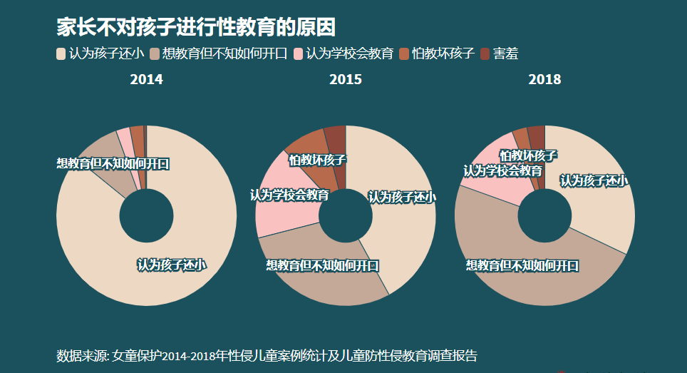
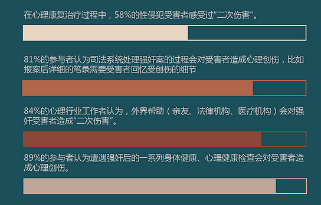

“思琪用面包涂奶油的口气对妈妈说：“我们的家教好像什么都有，就是没有性教育。“妈妈诧异地看着她，回答：“什么性教育？性教育是给那些需要性的人。所谓教育不就是这样吗？"思琪一时间明白了，在这个故事中父母将永远缺席，他们旷课了，却自以为是还没开学。”在《2014年儿童防性侵教育及性侵儿童案件统计报告》中，家长没有对孩子进行性教育的原因有“孩子太小了”（85.8%）、“想教育但不知如何开口”（8.6%）、“怕教坏孩子”（2.5%）。我们的社会一直以来对“性”避之若浼，然而就像网上流传的那句话“你嫌性教育太早，坏人不会嫌你孩子太小”一样，某些程度上来说，性教育的匮乏成为了助长性犯罪的帮手。

不仅仅是性教育需要被普及，在人们面对性侵受害者时的观念和态度也应转变。某性侵受害者说：“十六岁那年被强奸之后，我向家人求助。他们是这样’开导’我的：’你不要总想着自己是个受害者，你就当是个参与者好了。'这句话让我感到自己又被强奸了一次。回想起来，这句话甚至比被强奸本身还要痛。后来我才明白，这叫做’二次伤害’。”
家人、朋友、法律机构、大众舆论都有可能对受害者造成二次伤害，这样的伤害甚至会比性侵本身更严重。

我们首先需要保持对受害者的同理和共情，再痛斥性犯罪本身。
作为普罗大众中的一员，我们希望性侵儿童案件不再是一件需要被掩埋在受害者羞耻、痛苦的目光里的事情，不再是一件会被舆论评价为受害者“一生的污点”的事情，不再是一件猎奇、戏谑、可以开黄色玩笑的事情。
我们希望尽我所能地做到我们能为孩子们做的事情，剩下的，交给时间，交给法律。